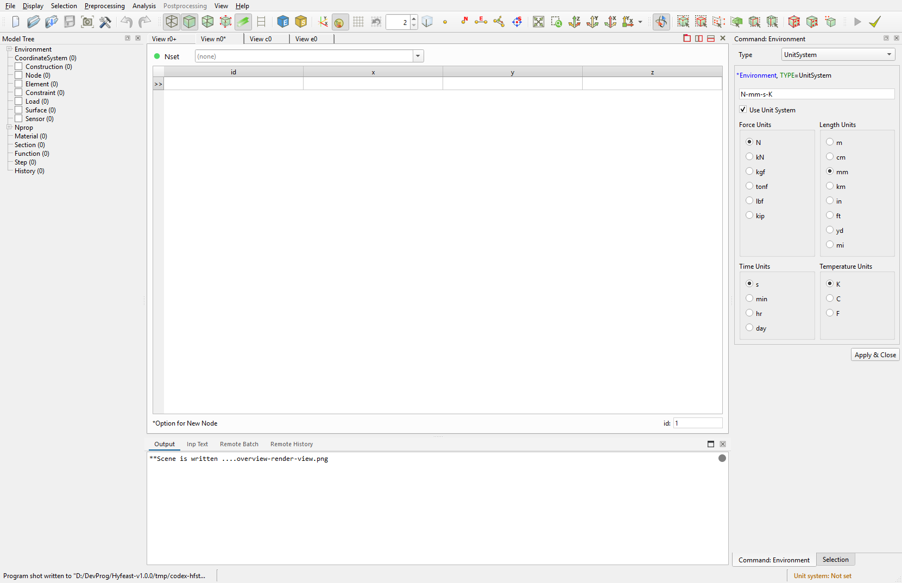

2.5 Preprocessing
This page covers the menus and dock widgets used to define and edit the model in preprocessing mode.
For automation, see Remote Control Preprocessing 2.7.x.

The Command Panel is the actual input area for preprocessing commands. Choosing an item from the Preprocessing menu opens the matching definition or edit widget in the right dock; Apply records the same canonical Remote Control tail into history and *.ipc.txt.


Node Table and Element Table are table-style edit views opened in the central area. They operate on the same model data as the menu commands, and row edits or deletions follow the same Remote Control rules.
2.5.1 Mode and model history
Most definition and edit commands work only in preprocessing mode. The following exception paths are still allowed in postprocessing mode to match the GUI: environment-info set, nset, elset, step Post ..., step-delete-from ..., history PostHistory ....
undo/redo re-applies the in-memory model-history stack of the session, not a re-parse of input text. The result JSON includes canUndo and canRedo after the command is applied.
2.5.2 Definition widgets
Each menu item opens the corresponding definition dock or dialog. GUI Apply records the same canonical Remote Control tail into Remote Control History and *.ipc.txt.
Definition commands that edit block text use the same body syntax as GUI Apply, and accept either --content <text> or --content-file <file>.
- Coordinate System:
coordinatesystem,-rename,-delete,coordinatesystem-activate - Construction:
construction,-rename,-delete - Material:
material,-rename,-delete - Section:
section,-rename,-delete - Function:
function,-rename,-delete - Load:
load,-rename,-delete - Surface:
surface - Sensor:
sensor,-rename,-delete - NProp:
nprop - Constraint: GUI widget only; in automation, constraints live in step content
- Step:
step,-rename,-delete,step-delete-from(postprocessing) - History:
history,-rename,-delete - Environment:
environment-info,environment-control(Environment) - Model:
model <type>(model generator)
coordinatesystem-activate mirrors the TreeMenu check/uncheck flow for User coordinate systems on a render view. Pass a name to activate, or none to deactivate.
When the Function widget is set to Type=TimeSignal, it can open the DB record selection dialog. The dialog's Add Record... action checks a user-provided text or .npy time-history file, collects record name, quantity, UnitSystem, dtime, nseries, skipRows, and sourceScaleFactor metadata, and registers it as a user DB record. Registered records are stored in tools/db/timeSignal/user/catalog.yml and tools/db/timeSignal/user/files/, then inserted into the TimeSignal source lines as DB, recordName[, scaleFactor]. Before updating the program or replacing the installation folder, back up or copy the whole tools/db/timeSignal/user/ folder if those user records should be kept.
The Analyze... button opens the non-modal Signal Analysis window for the current TimeSignal definition. From the Function widget, the window can compare multiple series resolved from the TimeSignal source lines; from the TimeSignal DB dialog, it analyzes the selected DB record. A TimeSignal definition may contain mixed quantities such as acceleration, velocity, and displacement records. The Time History tab can display the original quantity, one selected quantity, or a three-row acceleration/velocity/displacement view. Derived histories are display-only and do not modify the source TimeSignal, DB record, or source file. The window provides Time History, FFT, Response Spectrum, Statistics, and Metadata tabs. FFT can optionally remove the mean before transform. Response Spectrum uses damping and period-range controls, can display pSa, Sa, or Sd, and can draw the x-axis as Period/Linear, Period/Log, Frequency/Linear, or Frequency/Log; it is computed from acceleration. Velocity and displacement sources are numerically differentiated to acceleration for this tab, while Other/dimensionless series are skipped. Statistics report the source series values and include min/max/mean/RMS values and acceleration-like measures such as PGA, Arias Intensity, and CAV when applicable. Plot export uses the JKQtPlotter toolbar graph/data export actions; toolbar data export follows the displayed plot data, so dense histories may be exported after plot decimation/envelope reduction.
Derived acceleration, velocity, and displacement histories use the same numerical rules as tools/eqsig.py. TimeSignal samples are stored at \(t_i=(i+1)\Delta t\) and imply zero at \(t=0\). For an input series \(x_i\), integration uses the trapezoidal rule
Differentiation uses the backward-difference rule
No baseline correction, drift correction, filtering, or window correction is applied during these displayed quantity conversions.
In the FFT tab, Display=Amplitude and Display=Power use the same transform result. For a time series with \(N\) samples and interval \(\Delta t\), mean removal first replaces the values by
When mean removal is off, \(x'_m=x_m\). The plotted non-negative frequency points are
The amplitude spectrum displays
and the power spectrum displays
This Power Spectrum is a direct squared-amplitude display, not a power spectral density; it is not divided by frequency spacing and no window correction is applied.
2.5.3 Node menu / Node Table
The Node menu and the Node Table dock act on the same data.
- Node Create:
node <id> <x,y,z> [--nset] [--merge-node] - Node Copy (translate-copy / translate-move / rotate-copy / rotate-move) —
node-copy - Node Delete (Node Table row delete) —
node-delete <ids|__selected__> - Set Nodeset:
nset <name> --content ...,-rename,-delete - Merge Node Tolerance:
merge-node-tolerance get|set <value>
Merge Node Tolerance is shared session-wide and applies to node --merge-node on, node-copy, element-extrude, and element-divide.
2.5.4 Element menu / Element Table
- Element Create:
element <type> <id> <n1,n2,...> - Element Update (Element Table edit) —
element-update - Element Extrude (translate/rotate from current selection) —
element-extrude - Element Divide (refine/topology/parametric) —
element-divide - Element Change (retype/reverse-node-order/explode) —
element-change - Element Copy:
element-extrude --remove-source off - Element Delete (Element Table row delete) —
element-delete <ids|__selected__> - Set Elementset:
elset <name> --content ...,-rename,-delete - Delete Node/Element Selection (shortcut) — snapshot-based: records
element-delete <ids>thennode-delete <ids>
Partial-delete behavior: when safe delete leaves some items behind, the response is DELETE_PARTIAL with requestedIds, deletedIds, remainingIds, and a canonical scriptTail. The applied portion is recorded into history.
2.5.5 Assign to Selection
Collects the assign actions from the preprocessing context menu. The default target is the current element selection; --source <ids|__selected__> overrides it.
- Assign Section:
assign-section <section|none> - Assign Beam CS:
assign-beam-cs <beamcs|none> - Assign Beam End Release:
assign-beam-end-release <code|none>. code = combination ofRx1/Ry1/Rz1/Rx2/Ry2/Rz2. - Assign Embedded Line Spline:
assign-embedded-line-spline <spline|none> - Assign Embedded Line Host Elset:
assign-embedded-line-host-elset <host-elset|none> - Assign MCK Element Scale Factor:
assign-mck-element-scale-factor <value>. positive real value. - Assign MCK Element CS:
assign-mck-element-cs <ucs|none> - Assign Moving Spring Initial Position:
assign-moving-spring-initial-position <x,y> - Assign Shell Thickness, Shell Director: GUI only (element-property edit path)
Internally, each assign-* writes one *Distribution, TYPE=... block; clearing applies *Distribution, TYPE=..., Remove. There is no separate distribution remote command.
2.5.6 Model Generator
The Model widget builds a large mesh from a predefined shape generator.
Block2D,Block3D— rectangular blockCylinder— cylinderWall— wallRectangularTank,CylindericalTank— tankCurveExtrusion— extrude along a curveFarField2D,FarField3D,FarField2Dx,FarField3Dx— far-field boundary
Automation: model <type> --content ....
On apply, hidden items keep their per-view hidden state, new visible items are added to each view, topology is refreshed, and the camera is reset.
2.5.7 Renumbering
- Selected Nodes:
renumber selected-nodes <start-id> <prio1> <prio2> <prio3> - Selected Elements:
renumber selected-elements ... - All Nodes:
renumber all-nodes ... - All Elements:
renumber all-elements ...
Each priority token is one of +X, -X, +Y, -Y, +Z, -Z, and the three must be distinct. See Remote Control Renumber for details.
The selected modes require a non-empty current selection.